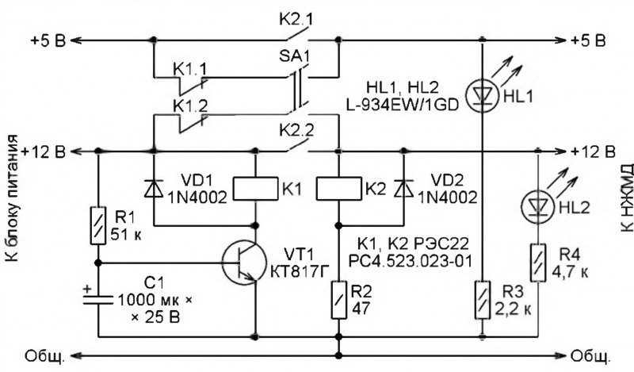
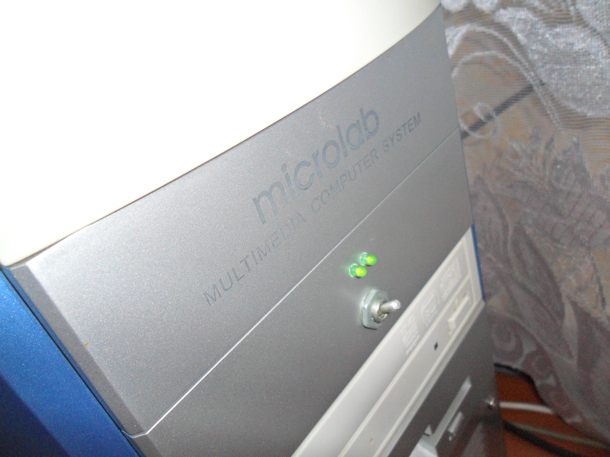

Во многих компьютерах бывает установлен дополнительный НЖМД. Он обычно не содержит операционной системы и предназначается для хранения различных редко используемых, например, архивных файлов. Тем не менее этот накопитель постоянно включён и бесполезно работает вхолостую, потребляя электроэнергию и расходуя свой ресурс. Блокировка его в "Диспетчере устройств" и в BIOS компьютера не отключает НЖМД полностью, лишь блокируя обращения к нему и оставляя питание включённым. Вариант отключения дополнительного НЖМД физическим отсоединением разъёма питания крайне неудобен, к тому же возникает опасность поломки разъёма.
При подаче на НЖМД питающих напряжений по схеме, показанной на рисунке, возможность его включения или выключения выключателем SA1 во время работы компьютера заблокирована. Блокировка не действует только короткое время после начала работы блока питания компьютера, что позволяет, заранее установив выключатель SA1 в нужное положение, запустить компьютер с действующим или с полностью выключенным дополнительным НЖМД.
Светодиоды HL1 и HL2 предназначены для контроля подачи на дополнительный НЖМД напряжений +5 В,+12 В. Они выведены на переднюю панель системного блока компьютером вместе с выключателем SA1.
Если компьютер включается при замкнутом выключателе SA1, то с появлением на выходе блока питания напряжения + 12 В срабатывает реле К2. Своими замкнувшимися контактами оно обеспечивает дальнейшую подачу питания на НЖМД, даже если выключатель SA1 вскоре будет разомкнут либо сработает реле К1. Цепь R1C1 и электронный ключ на транзисторе VT1 обеспечивают задержку срабатывания реле К1 на время, достаточное для надёжного срабатывания реле К2.
Когда компьютер включают при разомкнутом выключателе SA1, реле К2 не срабатывает и НЖМД остаётся выключенным. А по истечении задержки срабатывания реле К1 (около 3 с при указанных на схеме номиналах конденсатора С1 и резистора R1) его контакты К1.1 и К1.2 разорвут цепи, в которых установлен выключатель SA1. После этого и до самого выключения компьютера ни случайный, ни преднамеренный перевод выключателя SA1 в положение "включено" уже не приведёт к подаче питания на НЖМД.
Резистор R2 ограничивает ток через обмотку реле К2. Диоды VD1 и VD2 подавляют выбросы напряжения самоиндукции на обмотках реле. Резисторами R3 и R4 задан ток через сигнальные светодиоды.
Как уже было сказано, светодиоды и выключатель выведены на переднюю панель системного блока компьютера для удобства переключения и контроля состояния дополнительного НЖМД. Остальные детали узла коммутации размещены в небольшом пластмассовом корпусе, установленном внутри системного блока. Монтаж — навесной, непосредственно на выводах реле и транзистора.
Узел включают в разрыв проводов красного (+5 В) и жёлтого (+12 В) цветов, соединяющих разъём питания НЖМД с блоком питания компьютера. Чёрный соединительный провод (цепь СОМ — общий) разрывать не следует. Достаточно его небольшой участок зачистить от изоляции и соединить пайкой с общим проводом узла коммутации.
Автор: Александр Кузнецов
Ссылка на публикация в журнале "Радио"